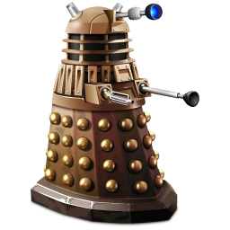

|  | Home | Quem somos | Vire um Dalek |
Quem SomosDaleks eram os descendentes mutantes dos Kaleds do planeta Skaro envoltos em armaduras de policarboneto (TV: Remembrance of the Daleks, Doomsday) e Dalekânio (TV: Evolution of the Daleks). O Doctor foi descrito - pelo próprio Décimo Primeiro Doctor - como "inimigo" dos Daleks. O Décimo Primeiro Doctor também descreveu os Daleks como seus "mais antigos e mortais inimigos". Eles os considerava "a pior coisa de toda a criação" e se gabava de ter batido nos mesmos algumas vezes. Ele notou que o odiavam e queriam matá-lo. (TV: Victory of the Daleks) Classic Series Daleks – pre Davros (1963)
+sobreOs Daleks lutaram contra os Time Lords na Última Grande Guerra do Tempo, que resultou na quase completa extinção da raça. (TV: Dalek, The Day of the Doctor) Extremamente xenofóbicos e obcecados com dominação universal após a destruição de seu próprio planeta, os Daleks são odiados e temidos por todo o tempo-espaço. |
|
Todos direitos a BBC |
|